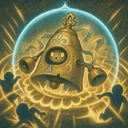

Gran Rintocco
Ottiene uno scudo pari a 300% del potere magico e provoca tutti i nemici entro 2 caselle da sé, entrambi per 2 s. Nel frattempo i nemici provocati attaccano solo lui e non possono iniziare a usare abilità. Per lo stesso tempo, ogni volta che viene colpito da un attacco base nemico, infligge a tutti i nemici entro 2 caselle da sé danni magici pari a 25% dei danni del colpo prima che armatura e scudi li riducano. Non ottiene mana finché la Provocazione non termina.